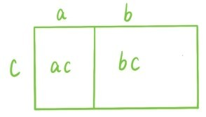
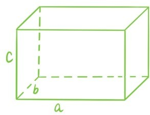

这一章的知识点看似不难，但其实不少概念和结论都是含糊不清的。
关于长方形的面积，其实并没有完整地回答问题30，因为长方形的长和宽有可能不是分数。完整地回答这个问题需要涉及高等数学中的实数理论，已经超出了初等数学的范围。不过，仍然可以给出一个初步的说明。对于一般的长方形，它的长和宽是一般的正实数，未必是分数，但可以用一串分数无限逼近长，用另一串分数无限逼近宽，这时就会有一串长宽都是分数的长方形无限逼近这个长方形。在这个无限逼近的过程中，长方形的面积总是等于长乘宽，在无限逼近的结果中，自然也会有相同的结论。
利用长方形的面积等于长乘宽这个结论还可以给出加法乘法分配律(a+b)c=ac+bc的一个几何解释：

类似地，利用柱体的体积等于底面面积×高这个结论，可以给出乘法结合律(ab)c=a(bc)的一个几何解释。下面的长方体，如果看成是高为c的柱体，那体积就是(ab)c，如果看成是高a为的柱体，那体积就是a(bc)。

在第三节，提了几个关于三角形、平行四边形等多边形的面积问题。除此之外，还有各种不规则平面图形。
这里又会出现各种关于面积的新问题，比如
问题37：一个不规则平面图形有精确的面积吗，如何计算它的面积？
一开始将面积解释为“平面图形所占据区域的大小”，这其实是一种非常模糊的说法。当说到长方形面积等于长乘以宽的时候，已经用到了实数相乘的概念，实际上如果要严格地解释清楚面积概念，所需要的不仅仅是严格的实数理论，还涉及拓扑、集合、测度相关的许多概念，这里面的理论非常深刻，远远超出了初等数学的范围。涉及体积的时候也会碰到类似的问题，比如
问题38：为什么柱体的体积都等于底面面积×高？
问题39：如何计算不规则立体图形的体积？
在讲到圆周长时，第一次碰到了弯曲的长度。线段的长度是用直尺衡量的，那么问题来了：
问题40：该如何衡量弯曲的长度？
将圆的周长定义为把圆周拉直成线段的长度，但是拉直只是一种形象的说法，并不严格。实际上，严格地衡量弯曲的长度需要用到微积分中的积分理论，这已经远远超出了本书的范围。关于圆的周长，还有一个问题。
问题41：为什么所有圆的直径和周长的比值都是相等的？
之前的解释是将一个圆放大至3倍，那么直径也变成原先的3倍，周长也变成原先的3倍。这个解释也不完整，为什么圆放大至3倍，周长也一定会变成原先的3倍呢？
求圆面积的时候，将圆平均切割成许多份，然后拼成一个近似长方形。这种求面积的方法是对的吗？一块饼干掰成两份都会掉一些饼干屑，但为什么圆切割成许多份，再拼接后，面积仍然不变呢？更一般的问题是：
问题42：为什么一个平面图形可以任意切割拼接，面积却会始终保持不变呢？
所有这些问题的回答，都远远超出了本书的范围。